西武池袋線 中村橋駅 徒歩3分 ｜ 個室型・完全予約制
こもって、
ほどける時間。
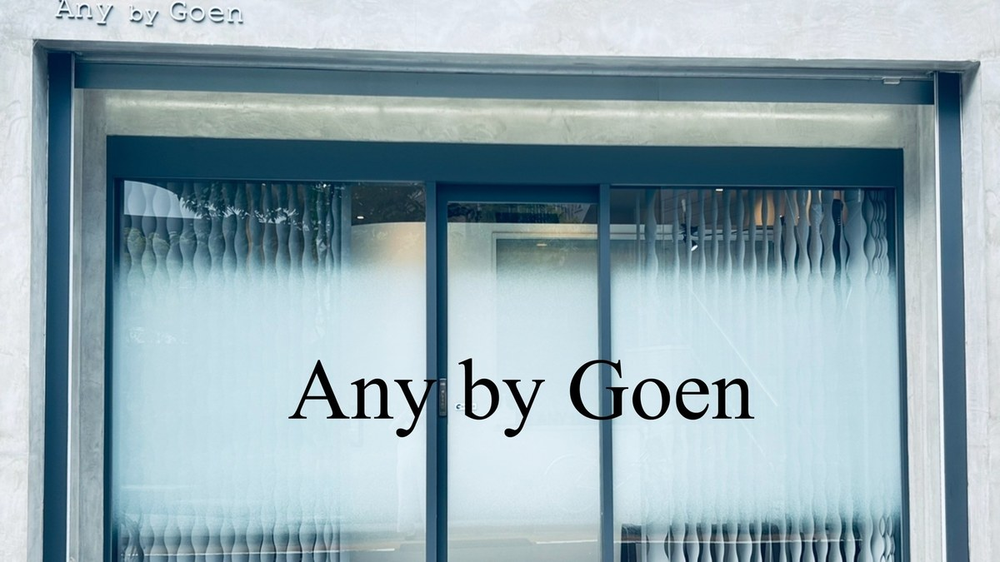
About Us Concept
五感を満たす
時間と空間を。
静かに、
安心して
過ごせる席で、
「自分史上最高の
ヘアスタイル」を
ご提案します。
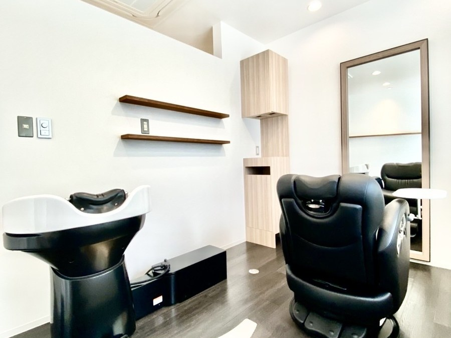
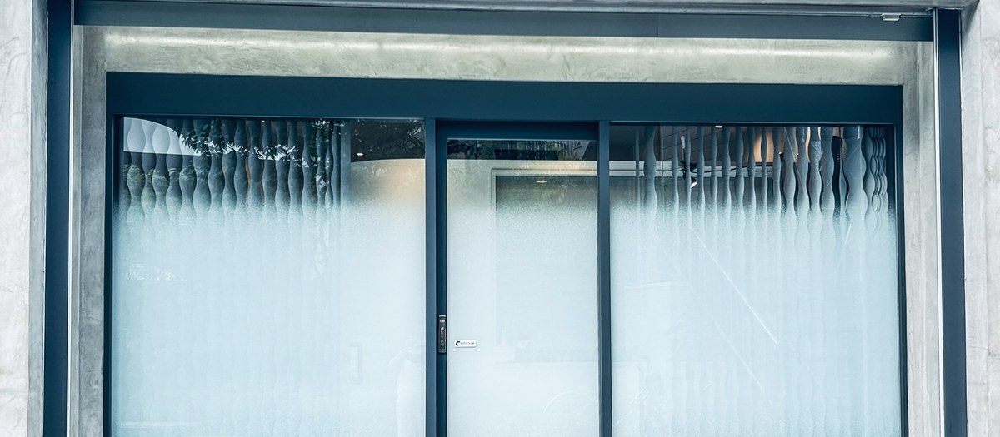
- Private Room半個室のマンツーマン
- Reborn Spa頭の筋膜にはたらきかける
- Step Bone Cut特許技術の立体カット
- Kimono着付け・前撮りも承ります
サロンが掲げているのは「お客様の五感を満たす時間と空間を体験できる」場所であること。経験を積んだスタイリストがマンツーマンで受け持ちます。セット面は仕切りのある半個室で、荷物はスペース内のロッカーにお預けいただけます。髪質改善やエイジングによるお悩みまで、まとめてご相談いただけます。
オリジナルのヘッドスパ「Reborn Spa」は、頭の筋膜と頭蓋骨の縫合部にはたらきかける独自の施術です。フルフラットのシャンプー台でオールハンドで行います。自律神経を整え、疲労の回復やリフトアップにつながることを目指しています。女性のホルモンの周期に合わせた「ムーンサイクル」から、その方に合うご来店の間隔もご提案します。
カットは、特許技術の「ステップボーンカット」を認定講師の MARIKO が承ります。髪を削がずに、骨格の補正とボリュームを両立させる立体的なカットです。くせを活かしたい方、伸ばしている途中の方にもご相談いただいています。髪質改善の「エンジェリックケア」は、前髪の割れ、つむじの割れ、襟足の浮きといったお悩みに向けたメニューです（担当：松崎・MARIKO）。
カラーはイノア、イルミナ、テラ、コレストンなどからお選びいただけます。施術のあとは炭酸泉で流し、COTA や TOKIO のケアを組み合わせます。七五三・振袖・袴・訪問着・留袖の着付けと、前撮りのヘアメイクも承っています（担当：小林）。早朝のご来店もご相談ください。
What We Do Menu Guide
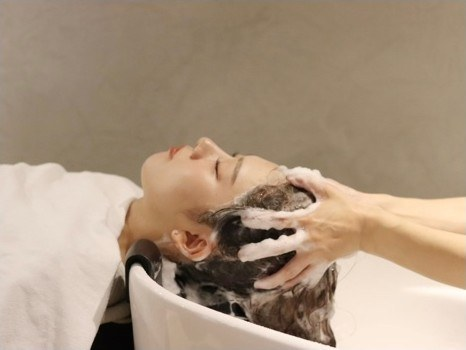
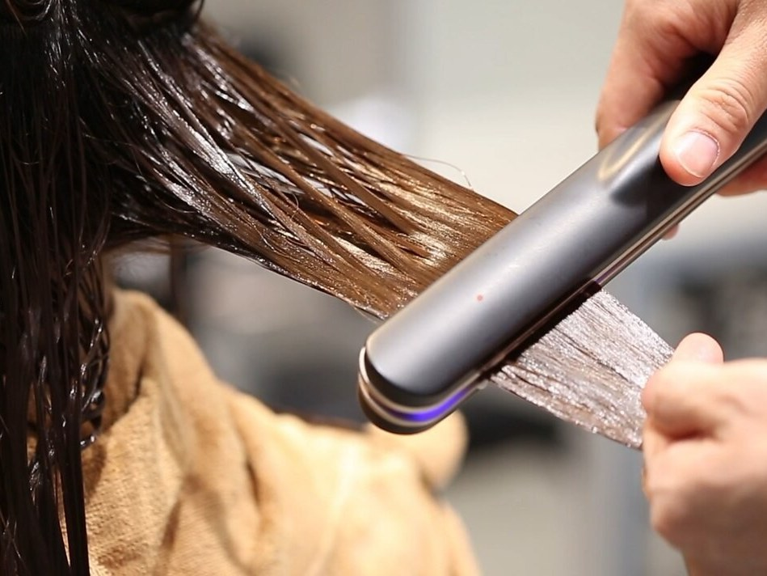
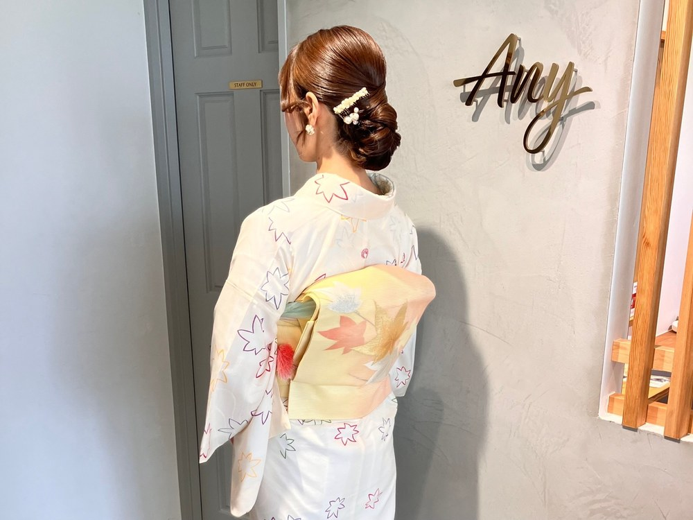
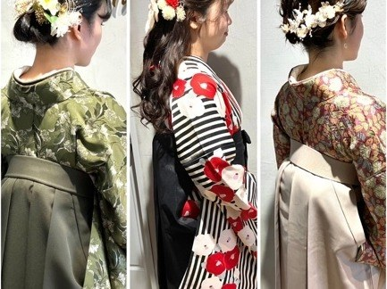
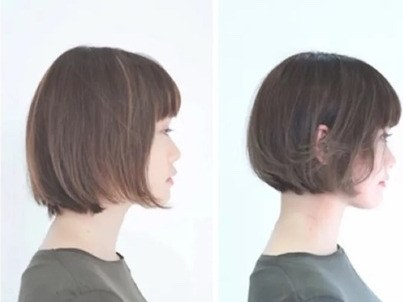
※ 写真はサロンが公開しているものです。仕上がりは髪質や骨格によって異なります。
In the Salon Salon
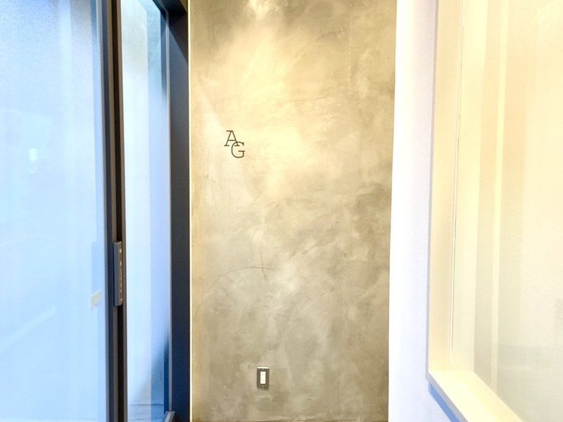
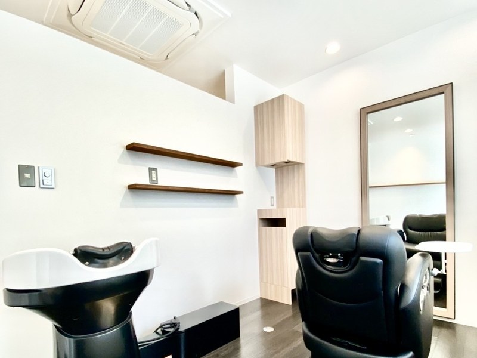
Treatment Flow
-
LINEでご予約
完全予約制です。ご予約は公式LINEから承っています。ご希望の内容をお書き添えください。
-
カウンセリング
半個室の席で、髪と頭皮の状態を見ながらお話をうかがいます。前髪やつむじの割れ、襟足の浮きなど、細かいお悩みもお聞かせください。
-
施術
カット、カラー、ストレート、ヘッドスパ。最初から最後まで同じ担当者が受け持ちます。トリートメントは超音波のアイロンを使って入れていきます。
-
炭酸泉とお仕上げ
弱酸性の炭酸泉で流してからお仕上げします。ご自宅でお使いいただけるシャンプー・トリートメントも10種類以上ご用意しています。
Stylist Staff
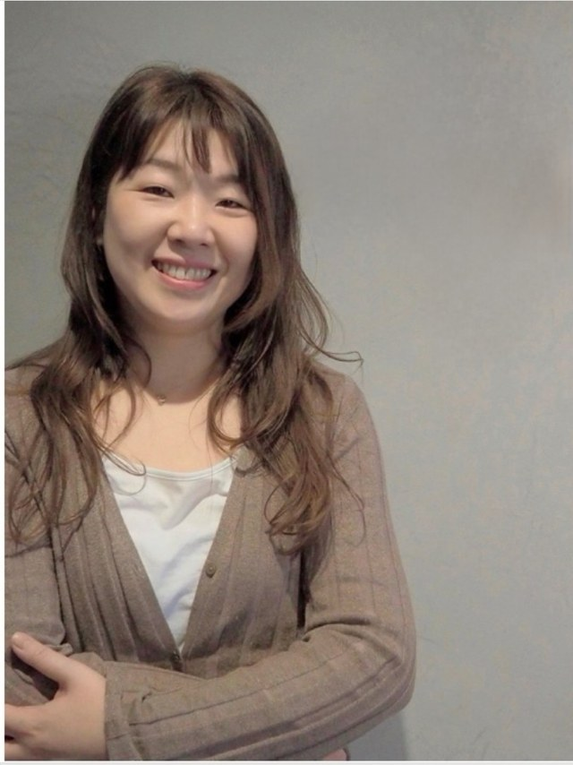
トップスタイリスト／着付け師
小林 由紀子こばやし ゆきこ ／ 美容歴20年以上
伸びてもまとまるカットと、心地よいシャンプーを大切にしています。着付けと前撮りのヘアメイクも承ります。早朝のご来店もご相談ください。
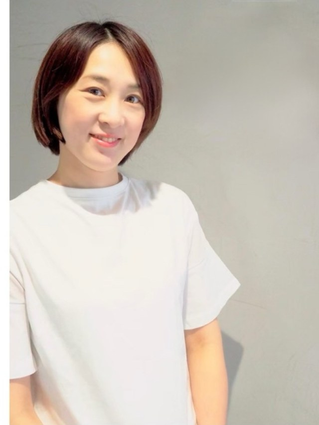
トップスタイリスト／スパニスト
MARIKOマリコ ／ 美容歴17年
ステップボーンカットの認定講師です。ショート・ボブ、骨格やくせのお悩み、負担をおさえたカラーを得意としています。男性とお子さまはご紹介のみ承ります。
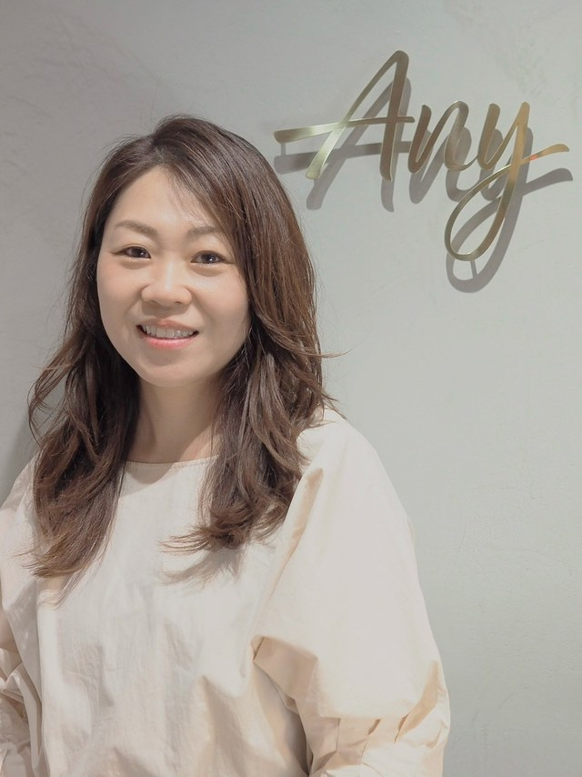
トップスタイリスト
AKIKOアキコ
ブライダルでの経験があります。ヘアセットも承ります。
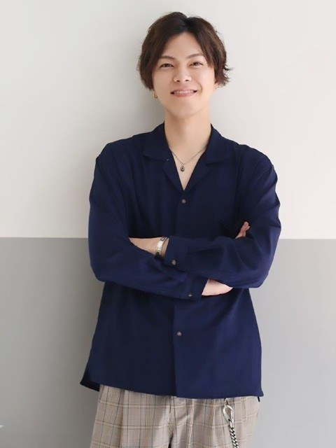
代表
松崎 隼也まつざき としや ／ 美容歴20年
ご紹介のお客様のみ担当しております。ショートボブ、くせ毛のご相談を承ります。
Access Salon Info
- Store
- Any by Goen（エニィ バイ ゴエン）
- Address
- 〒176-0021
東京都練馬区貫井2-3-7 1F - Access
- 西武池袋線「中村橋駅」より徒歩3分豊島園駅から徒歩13分、富士見台駅から徒歩10分。バス停「中村橋駅入口」からは徒歩3分です。
- Open
- 9:00 - 20:00ご案内元によって営業時間の記載が分かれていました。ご予約時にお確かめください。
- Closed
- 不定休
- Reserve
- 公式LINEにて受付完全予約制です。お電話番号は公開情報では確認できませんでした（No Data）。公式サイトに掲載の番号はひな形のままの値でした。
- Rooms
- 個室・セット面2席／シャンプー台2席仕切りのある席で、荷物はスペース内のロッカーにお預けいただけます。
- Payment
- 各種クレジットカード対応ブランドの詳細は公開されていません（No Data）。
- Parking
- 店舗専用の駐車場なし近くにコインパーキングがあります。
- Web
- 公式サイト本サイトは提案用のサンプルです。公式サイトとは別のものです。
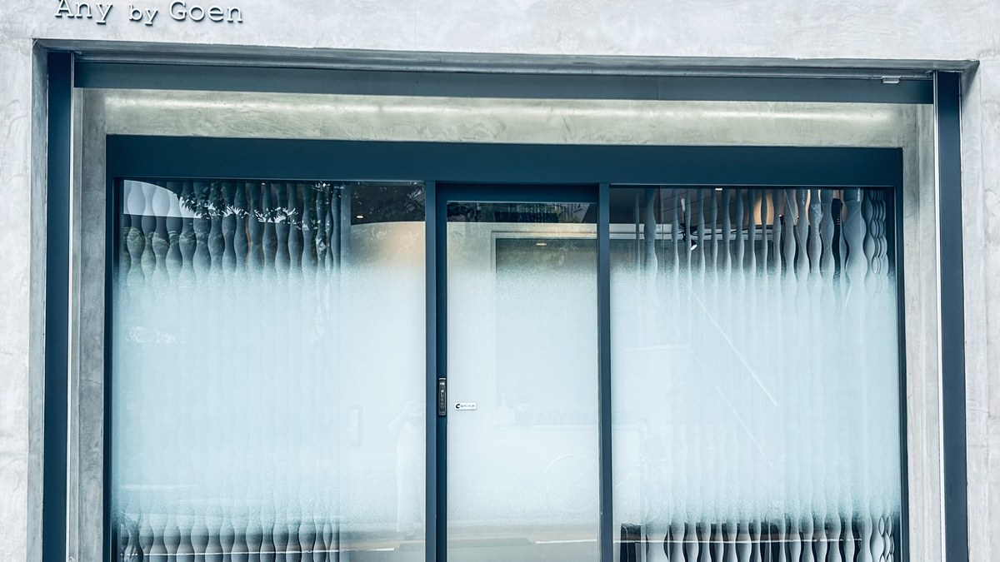